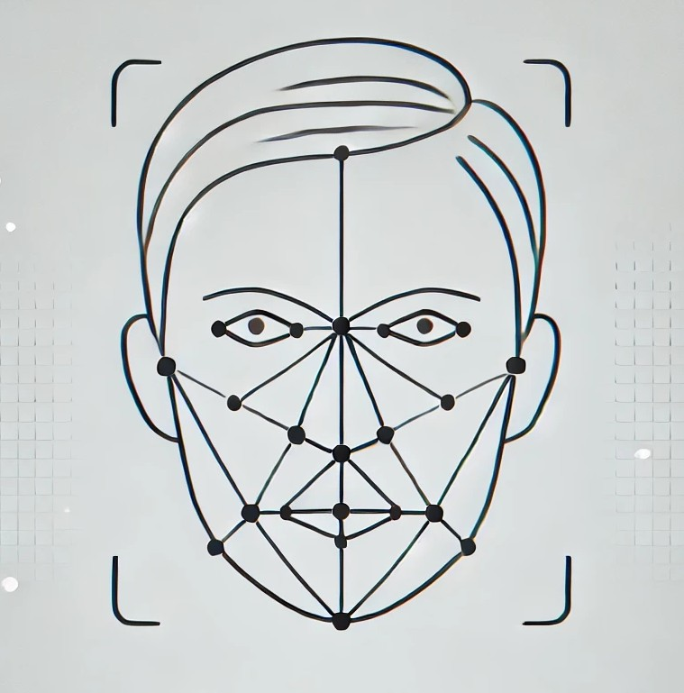

Добро пожаловать на сервер, разработанный Мартоном Никитой Андреевичем!
Этот сервер - часть системы распознавания лиц, которая используется для автоматической отметки присутствия студентов на парах.
Используйте предоставленные API для взаимодействия с системой.
Система надёжна и удобна в использовании. Мы гарантируем точное и быстрое распознавание студентов на основе новейших алгоритмов компьютерного зрения.
